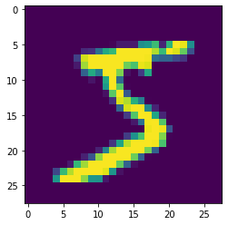

from sklearn.datasets import load_breast_cancer, load_iris
from sklearn.discriminant_analysis import LinearDiscriminantAnalysis
from sklearn.decomposition import PCA
from sklearn.linear_model import LogisticRegression
import matplotlib.pyplot as plt
import numpy as np
from scipy.stats import multivariate_normal
from scipy.special import softmax
from scipy import sparse
from itertools import product
from tensorflow import keras
Exercise: Dense Neural Networks¶
In this exercise, we shall train a simple dense neural network classifier for the MNIST handwritten digits dataset available within tensorflow. The dataset consist of images of handwritten digits with 28 by 28 pixels.
Loading the MNIST dataset¶
# Load Dataset
(x_train , y_train), (x_test , y_test) = keras.datasets.mnist.load_data()
# Standardise the data to have a spread of 1
x_train, x_test = x_train / 255.0, x_test / 255.0
plt.imshow(x_train[0])

Define the network¶
# Define the model
model = keras.Sequential([
keras.layers.Flatten(input_shape=(28,28)),
keras.layers.Dense(12, activation='relu'),
keras.layers.Dense(10, activation='softmax')
])
The softmax activation in the final layer ensures that the output can be treated as a probability distribution over the 10 possible classes, i.e. the model defines the function
where the output \(\boldsymbol{f}(\boldsymbol{x})\) satisfies
# Lets look at the model's prediction before training it
pred = model(x_train[0:1])
print(pred.numpy())
plt.plot(pred[0])
plt.xlabel('Classification')
plt.ylabel('Probability')
plt.show()
[[0.0934115 0.1345084 0.06015386 0.17981586 0.16215855 0.09857295
0.10626732 0.06349586 0.05087668 0.05073911]]

Choosing an optimizer and a loss function¶
We chose the ADAM optimizer (Don’t worry about the details of the optimizer, you will learn about them in the next task. For now, it is enough to know that this is similar to stochastic gradient descent.). The loss function here is known as the cross entropy defined as
where \(y_i = 1\) if the true classification of the sample \(\boldsymbol{x}\) is \(i\), otherwise \(y_i = 0\). The function \(f_i(\boldsymbol{x})\) is the probability distribution defined above.
# Compile and train the model
model.compile(optimizer='adam',
loss=keras.losses.SparseCategoricalCrossentropy(),
metrics=['accuracy'])
history = model.fit(x_train, y_train, validation_data=(x_test, y_test), epochs=10, batch_size=32)
Epoch 1/10
1875/1875 [==============================] - 1s 751us/step - loss: 0.5062 - accuracy: 0.8557 - val_loss: 0.2964 - val_accuracy: 0.9141
Epoch 2/10
1875/1875 [==============================] - 1s 689us/step - loss: 0.2816 - accuracy: 0.9193 - val_loss: 0.2613 - val_accuracy: 0.9223
Epoch 3/10
1875/1875 [==============================] - 1s 618us/step - loss: 0.2522 - accuracy: 0.9267 - val_loss: 0.2421 - val_accuracy: 0.9299
Epoch 4/10
1875/1875 [==============================] - 1s 624us/step - loss: 0.2357 - accuracy: 0.9324 - val_loss: 0.2241 - val_accuracy: 0.9336
Epoch 5/10
1875/1875 [==============================] - 1s 628us/step - loss: 0.2237 - accuracy: 0.9356 - val_loss: 0.2210 - val_accuracy: 0.9345
Epoch 6/10
1875/1875 [==============================] - 1s 606us/step - loss: 0.2143 - accuracy: 0.9381 - val_loss: 0.2221 - val_accuracy: 0.9345
Epoch 7/10
1875/1875 [==============================] - 1s 628us/step - loss: 0.2071 - accuracy: 0.9404 - val_loss: 0.2110 - val_accuracy: 0.9384
Epoch 8/10
1875/1875 [==============================] - 1s 614us/step - loss: 0.2009 - accuracy: 0.9419 - val_loss: 0.2109 - val_accuracy: 0.9376
Epoch 9/10
1875/1875 [==============================] - 1s 616us/step - loss: 0.1946 - accuracy: 0.9441 - val_loss: 0.2110 - val_accuracy: 0.9379
Epoch 10/10
1875/1875 [==============================] - 1s 611us/step - loss: 0.1894 - accuracy: 0.9455 - val_loss: 0.2092 - val_accuracy: 0.9386
# The model's predicition after training now makes sense!
pred = model(x_train[0:1])
print(pred.numpy())
plt.plot(pred[0])
plt.xlabel('Classification')
plt.ylabel('Probability')
plt.show()
[[4.9257022e-05 2.3301787e-05 3.0720589e-04 3.1944558e-01 3.5377405e-09
6.7966461e-01 7.4789693e-07 4.9926934e-04 1.5144547e-06 8.4192516e-06]]

# We can also look at the optimisation history
plt.plot(history.history['accuracy'], label='Training Accuracy')
plt.xlabel('Epoch')
plt.ylabel('Accuracy')
plt.legend()
plt.show()

Comparing Neural Networks with Logistic Regression¶
If one looks closely at the functional form of the LR model and compares it with a simple dense neural network, one would notice that the LR model is simply a “neural network” without hidden layers. To investigate this, we consider a fictitious 2-dimensional dataset with 2 classes constructed as follows. The data points \(\boldsymbol{x} \in \mathbb{R}^2\) are uniformly sampled within a square such that \(-1\leq x_0 \leq 1\) and \(-1\leq x_1 \leq 1\). The data point belongs to the class \(1\) if
otherwise, it belongs to class \(2\). The dataset can be created with the code snippet below:
# Construct the dataset
sX = np.random.uniform(low=-1, high=1, size=(10000,2))
sY = np.array([0 if s[1]<=0.5*np.cos(np.pi*s[0]) else 1 for s in sX])
plt.xlabel('Feature 1')
plt.ylabel('Feature 2')
plt.ylim(-5,5)
plt.scatter(
sX[:,0],
sX[:,1],
c=sY,
cmap='rainbow',
alpha=0.5,
edgecolors='b'
)
plt.xlim(-1,1)
plt.ylim(-1,1)
plt.show()

# Use sklearn's Logistic regression method
clf = LogisticRegression(random_state=0).fit(sX, sY)
predictions = clf.predict(sX)
acc = len(np.where(sY == predictions)[0])/10000
print("LR Accuracy =", acc)
plt.xlabel('PC1')
plt.ylabel('PC2')
plt.ylim(-5,5)
plt.scatter(
sX[:,0],
sX[:,1],
c=predictions,
cmap='rainbow',
alpha=0.5,
edgecolors='b'
)
plt.xlim(-1,1)
plt.ylim(-1,1)
plt.show()
LR Accuracy = 0.8439
We see very clearly the linear decision boundary of the logistic regression method. This is clearly not sufficient to correctly classify this fictitious data. We now proceed to a simple neural network solution.
def single_layer_model(h):
model = keras.Sequential([
keras.layers.Dense(h, activation='tanh'),
keras.layers.Dense(2, activation='softmax')
])
model.compile(optimizer='adam', loss=keras.losses.SparseCategoricalCrossentropy(),metrics=['accuracy'])
return model
# A simple neural network with 2 hidden units
model = single_layer_model(2)
model.fit(sX,sY,epochs=50,batch_size=32)
Epoch 1/50
313/313 [==============================] - 0s 880us/step - loss: 0.4734 - accuracy: 0.8328
Epoch 2/50
313/313 [==============================] - 0s 618us/step - loss: 0.3799 - accuracy: 0.8492
Epoch 3/50
313/313 [==============================] - 0s 428us/step - loss: 0.3376 - accuracy: 0.8499
Epoch 4/50
313/313 [==============================] - 0s 430us/step - loss: 0.3190 - accuracy: 0.8517
Epoch 5/50
313/313 [==============================] - 0s 429us/step - loss: 0.3082 - accuracy: 0.8543
Epoch 6/50
313/313 [==============================] - 0s 437us/step - loss: 0.2987 - accuracy: 0.8592
Epoch 7/50
313/313 [==============================] - 0s 427us/step - loss: 0.2874 - accuracy: 0.8652
Epoch 8/50
313/313 [==============================] - 0s 428us/step - loss: 0.2743 - accuracy: 0.8720
Epoch 9/50
313/313 [==============================] - 0s 425us/step - loss: 0.2596 - accuracy: 0.8804
Epoch 10/50
313/313 [==============================] - 0s 436us/step - loss: 0.2439 - accuracy: 0.8910
Epoch 11/50
313/313 [==============================] - 0s 433us/step - loss: 0.2279 - accuracy: 0.9028
Epoch 12/50
313/313 [==============================] - 0s 429us/step - loss: 0.2122 - accuracy: 0.9130
Epoch 13/50
313/313 [==============================] - 0s 436us/step - loss: 0.1969 - accuracy: 0.9243
Epoch 14/50
313/313 [==============================] - 0s 426us/step - loss: 0.1830 - accuracy: 0.9329
Epoch 15/50
313/313 [==============================] - 0s 428us/step - loss: 0.1700 - accuracy: 0.9404
Epoch 16/50
313/313 [==============================] - 0s 427us/step - loss: 0.1581 - accuracy: 0.9482
Epoch 17/50
313/313 [==============================] - 0s 428us/step - loss: 0.1472 - accuracy: 0.9539
Epoch 18/50
313/313 [==============================] - 0s 430us/step - loss: 0.1376 - accuracy: 0.9569
Epoch 19/50
313/313 [==============================] - 0s 426us/step - loss: 0.1290 - accuracy: 0.9614
Epoch 20/50
313/313 [==============================] - 0s 427us/step - loss: 0.1212 - accuracy: 0.9631
Epoch 21/50
313/313 [==============================] - 0s 432us/step - loss: 0.1144 - accuracy: 0.9661
Epoch 22/50
313/313 [==============================] - 0s 437us/step - loss: 0.1083 - accuracy: 0.9689
Epoch 23/50
313/313 [==============================] - 0s 426us/step - loss: 0.1029 - accuracy: 0.9702
Epoch 24/50
313/313 [==============================] - 0s 430us/step - loss: 0.0982 - accuracy: 0.9722
Epoch 25/50
313/313 [==============================] - 0s 427us/step - loss: 0.0938 - accuracy: 0.9718
Epoch 26/50
313/313 [==============================] - 0s 448us/step - loss: 0.0899 - accuracy: 0.9734
Epoch 27/50
313/313 [==============================] - 0s 426us/step - loss: 0.0865 - accuracy: 0.9741
Epoch 28/50
313/313 [==============================] - 0s 434us/step - loss: 0.0834 - accuracy: 0.9741
Epoch 29/50
313/313 [==============================] - 0s 427us/step - loss: 0.0806 - accuracy: 0.9750
Epoch 30/50
313/313 [==============================] - 0s 428us/step - loss: 0.0781 - accuracy: 0.9756
Epoch 31/50
313/313 [==============================] - 0s 426us/step - loss: 0.0757 - accuracy: 0.9763
Epoch 32/50
313/313 [==============================] - 0s 430us/step - loss: 0.0735 - accuracy: 0.9759
Epoch 33/50
313/313 [==============================] - 0s 429us/step - loss: 0.0716 - accuracy: 0.9771
Epoch 34/50
313/313 [==============================] - 0s 427us/step - loss: 0.0698 - accuracy: 0.9776
Epoch 35/50
313/313 [==============================] - 0s 430us/step - loss: 0.0682 - accuracy: 0.9780
Epoch 36/50
313/313 [==============================] - 0s 433us/step - loss: 0.0667 - accuracy: 0.9784
Epoch 37/50
313/313 [==============================] - 0s 428us/step - loss: 0.0653 - accuracy: 0.9787
Epoch 38/50
313/313 [==============================] - 0s 431us/step - loss: 0.0640 - accuracy: 0.9787
Epoch 39/50
313/313 [==============================] - 0s 437us/step - loss: 0.0627 - accuracy: 0.9793
Epoch 40/50
313/313 [==============================] - 0s 430us/step - loss: 0.0616 - accuracy: 0.9792
Epoch 41/50
313/313 [==============================] - 0s 427us/step - loss: 0.0604 - accuracy: 0.9793
Epoch 42/50
313/313 [==============================] - 0s 439us/step - loss: 0.0594 - accuracy: 0.9797
Epoch 43/50
313/313 [==============================] - 0s 435us/step - loss: 0.0585 - accuracy: 0.9795
Epoch 44/50
313/313 [==============================] - 0s 431us/step - loss: 0.0576 - accuracy: 0.9802
Epoch 45/50
313/313 [==============================] - 0s 430us/step - loss: 0.0568 - accuracy: 0.9802
Epoch 46/50
313/313 [==============================] - 0s 430us/step - loss: 0.0559 - accuracy: 0.9797
Epoch 47/50
313/313 [==============================] - 0s 539us/step - loss: 0.0552 - accuracy: 0.9802
Epoch 48/50
313/313 [==============================] - 0s 433us/step - loss: 0.0545 - accuracy: 0.9805
Epoch 49/50
313/313 [==============================] - 0s 427us/step - loss: 0.0538 - accuracy: 0.9807
Epoch 50/50
313/313 [==============================] - 0s 427us/step - loss: 0.0531 - accuracy: 0.9814
Since the network is non-linear, it is not straightforward to derive an explicit formula for the boundary, but we can simply evaluate the network on a grid and plot the result.
The functional form of this neural network is given by
where \(W^{(i)}\) and \(\boldsymbol{b}^{(i)}\) are the weights and biases of layer \(i\).
# Use our trained neural network to predict the classes
prediction = model.predict_classes(sX)
plt.xlabel('PC1')
plt.ylabel('PC2')
plt.scatter(
sX[:,0],
sX[:,1],
c=prediction,
cmap='rainbow',
alpha=0.5,
edgecolors='b'
)
plt.xlim(-1,1)
plt.ylim(-1,1)
plt.show()

Varying the number of hidden units allows us to observe how the decision boundary changes.
# With more hidden units the accuracy increases
h = 3
model = single_layer_model(h)
hist = model.fit(sX,sY,epochs=50,batch_size=32, verbose=0)
# We can extract the weights and biases from the network
# to plot the corresponding lines
first_layer_weights = model.layers[0].get_weights()[0]
first_layer_biases = model.layers[0].get_weights()[1]
x = np.zeros((h,2))
y = np.zeros((h,2))
for i in range(h):
x[i,:]=np.array([-1,1])
y[i,:]=np.array([(first_layer_weights[0,i]-first_layer_biases[i])/first_layer_weights[1,i], -(first_layer_weights[0,i]+first_layer_biases[i])/first_layer_weights[1,i]])
for i in range(h):
plt.plot(x[i], y[i])
# Plot also the networks predictions
prediction = model.predict_classes(sX)
plt.xlabel('PC1')
plt.ylabel('PC2')
plt.scatter(
sX[:,0],
sX[:,1],
c=prediction,
cmap='rainbow',
alpha=0.5,
edgecolors='b'
)
plt.xlim(-1,1)
plt.ylim(-1,1)
plt.show()

The weights and biases from the model can be used to plot the lines defined by
for each index \(i\) (for \(m\) hidden layers, \(i = 1, \dots , m\)). Notice that the lines somewhat mimic the decision boundary of the network.